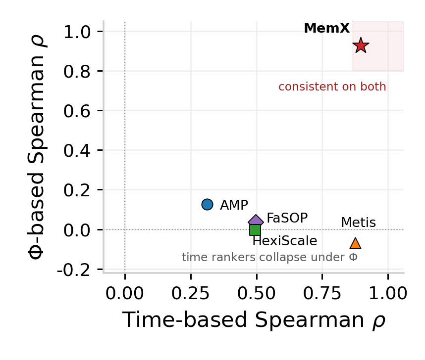
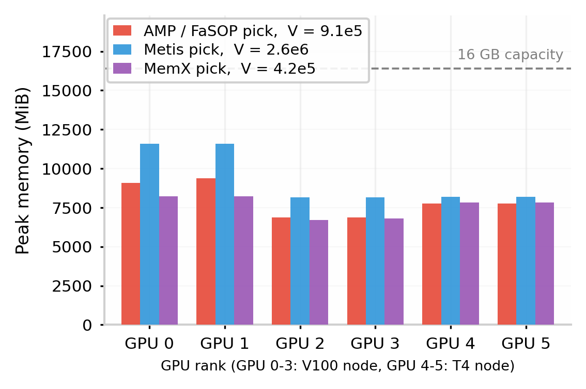
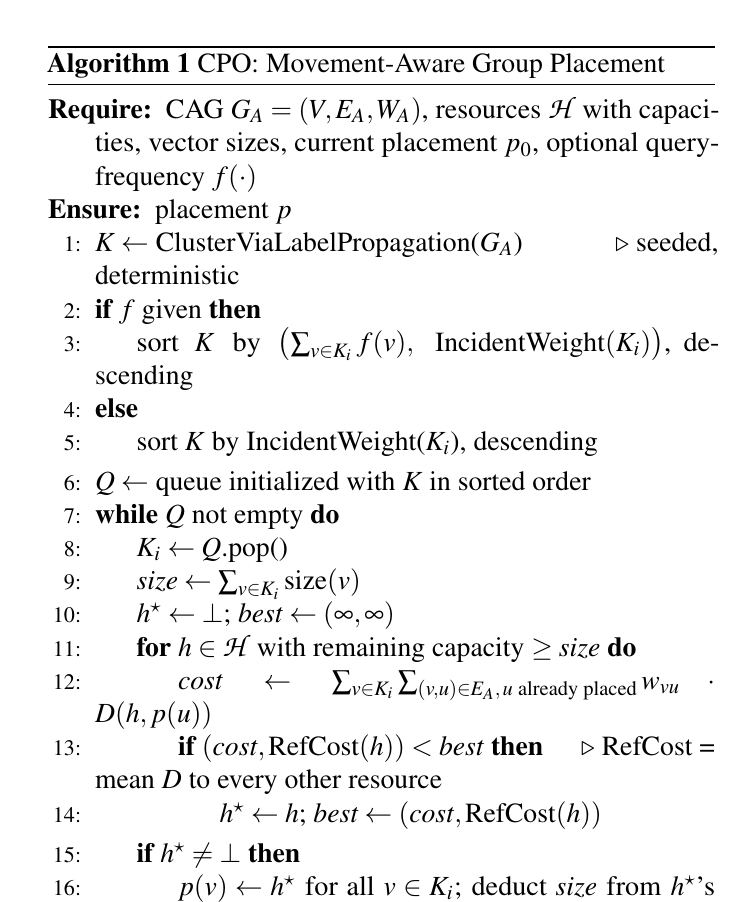
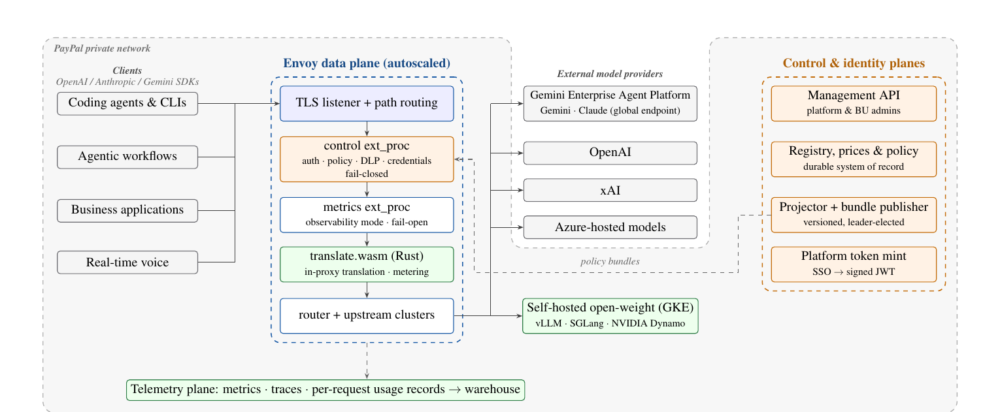

目录 · 10 节
1它到底在解决什么问题？2整体流程3分段重算：显存小的卡多算一遍，显存大的卡不算4综合分数：任何一项偏大都会被惩罚5怎么让几万个配置搜得起？6实验：预测准不准，排得对不对7实际部署：慢 9.3%，换来最均匀的显存8我认为它的局限9一个搜索/推荐团队可以怎么试10结论与评价在多家厂商 GPU 混在一起的集群上训练大模型，MemX（这篇论文的自动并行系统）把各卡显存均不均衡也写进搜索目标，并且允许显存小的卡多做重算、显存大的卡不做，从而找到既不 OOM、各卡显存又均匀的并行配置。它给每个候选配置估三个数：每轮迭代耗时、峰值显存、各卡显存占用的方差，三项按权重合成一个分数，分数最小的胜出。为了让这么大的配置空间搜得起，它只在少数关键参数上实测，再用一个同时输出耗时和显存的 XGBoost 模型去估其余配置。在 20 卡三厂商集群上，它的耗时预测误差（MAPE）是 12.17%，四个对比方法里最好的 Metis 是 14.91%；按耗时排序和按显存均衡排序，只有它两次都把真实第一名排在第一。在线搜索 31,240 个配置它 26.5 秒搜完，而 AMP（一个逐个实测配置的已有异构自动并行系统）按它的耗时增长曲线外推要约 17 天。值得做混合集群训练的团队读，但要知道它换来的是显存余量，不是更快：在小集群上实际部署时，它挑的配置比最快配置慢 9.3%。混合集群里显存和算力不成比例，搜索目标里必须有显存。
它到底在解决什么问题？
先看论文第 1 节表 1 的真实例子。一台 X 厂商卡约 300 TFLOPS、32GB 显存，一台 Y 厂商卡约 256 TFLOPS、64GB 显存，训练 32 层的 LLaMA2-7B，用流水线并行把层分给两张卡。论文没有按标称参数，而是按两种卡在这个任务上实测的训练能力来分层。按实测算力，X 应分到 21 层、Y 分 11 层；但同样的层在 X 上更占显存，按显存只能分成 8:24。所以按算力和按显存会分出两种完全不同的切法。
| 怎么分层（X:Y） | 结果 | 合计吞吐 |
|---|---|---|
| 按算力分 21:11 | X 显存超 100%，OOM | 跑不起来 |
| 按显存分 8:24 | X 用 88%，Y 用 78% 显存 | 55 TFLOPS |
| 只用 X 卡训练（论文的单厂商基线） | — | 70 TFLOPS |
| 只用 Y 卡训练（论文的单厂商基线） | — | 86 TFLOPS |
按显存分能跑，但两张卡一起只有 55 TFLOPS，比论文给的两个单卡型基线（70 和 86）都低。70 和 86 是论文表 1 里同一任务只用 X 或只用 Y 训练时的吞吐。原因是流水线里每一段要等最慢的那段：X 只算 8 层，用的时间约是 Y 算 24 层的 41%，每个周期有约 59% 在空等。两种卡独立速率相加是 70 + 86 = 156 TFLOPS，论文算下来混合后只用上了其中约 35%。
已有的异构自动并行系统（AMP、Metis、HexiScale、FaSOP）大多只最小化迭代时间，显存只当"放得下/放不下"的硬约束，层也按算力比例分。同一厂商不同代的卡（V100 到 A100）算力和显存大致同比增长，这么做没问题；跨厂商时两者脱钩，比如 H20 算力只有 H100 的 15%，显存却有 96GB（第 2.1 节）。MemX 的回答是两件事：让每段流水线可以选不同的重算力度，用时间换显存；再把显存高低和均不均匀直接写进打分。
整体流程

| 部件 | 解决什么 | 怎么做 |
|---|---|---|
| 分段重算 | 显存小的卡放不下、显存大的卡闲着 | 每段流水线单独选重算档位（多数情况下是 Full 或 None） |
| 综合分数 Φ | 只看耗时会挑出显存失衡的配置 | 耗时、峰值显存、显存方差加权相乘 |
| 少量实测 + 插值 + XGBoost | 配置太多，没法逐个实测 | 只测关键参数的三个点，插值扩充后训练预测模型 |
| 预测缓存 | 几万个配置逐个调用模型也慢 | 关键参数相同的配置直接复用上次的预测 |
分段重算：显存小的卡多算一遍，显存大的卡不算
已有系统一般对整个集群统一开或统一关重算（activation recomputation）。MemX 让每段流水线（通常对应一种卡）单独选重算档位。Full 是最省显存的一档：只保留每层的输入，反向时把整层的前向重算一遍。部署实验里整层重算有 full-block 和 full-uniform 两个选项，原文没有说明方法里的 Full 对应其中哪一个。None 是全部保留、不重算，不多花时间。中间一档 Selective 只保留一部分计算代价高的中间结果，其余在反向时重算；论文发现它在现代 GPU 上省的显存很少、多花的时间和测量噪声分不开，在这种卡上 MemX 就去掉这一档，只在 None 和 Full 之间二选一（第 3.1.1 节）。
每段选哪一档，MemX 分两步决定，搜索时每个候选配置都要过一遍。第一步保证放得下：一段即使用 Full 也放不下，这个配置直接剪掉；用 None 放得下就先用 None，否则强制 Full。第二步在放得下的档位里细调，目标是总迭代时间最短，依据是每种卡的边际交换率（式 1），也就是每省 1 MiB 显存要多花多少时间。原文没有说明候选配置里已经列出的重算档位怎样和这两步衔接，也没有给出按交换率改动某一段档位的具体规则。过了这两步的配置，再算下一节的综合分数，分数最小的胜出。
论文的观察是，交换率同时取决于算力和显存带宽：算力强但显存带宽紧的卡，频繁重算可能卡在带宽上；算力弱但带宽富余的卡，开 Full 多花的时间反而相对少。
拿表 1 设想一下（示意，论文没有在这个例子上跑 MemX）：X 卡显存紧，可以多分几层并开 Full，Y 卡保持 None，两段耗时有望更接近；实际效果要看 Full 在 X 上多花多少时间。
综合分数：任何一项偏大都会被惩罚
每个候选配置有三个数：迭代时间 T、峰值显存 M（所有卡里最高的那张）、显存方差 V（各卡显存占用的 MiB 数偏离平均值的程度，按绝对占用算，不是占容量的比例）。三个数各除以一个参考值（论文举例用全部可行候选的中位数），变成"是中位数的几倍"，然后按权重取幂再相乘：
权重加起来等于 1，可以直接读成：某一项涨 1%，Φ 大约涨 w%。用加权乘积，是为了让权重直接读成这种弹性，并让任何一项明显偏大都拉高总分。V 上还加了一个很小的常数，防止某个配置方差恰好为 0 时把整个分数压成 0。手算一个例子（示意）：配置甲的耗时是中位数的 1.1 倍、方差是中位数的一半，配置乙两项都正好等于中位数，峰值显存都等于中位数。默认权重（0.4, 0.2, 0.4）下，甲的分数是 1.1^0.4 × 0.5^0.4 ≈ 1.039 × 0.758 ≈ 0.79，乙是 1。甲慢 10%，却因为显存均匀得多而胜出。
为了避免在测试数据上调权重，三档权重都是在评测开始前按部署环境选定的，不是看了结果再挑：默认档（0.4, 0.2, 0.4）给卡型差异大的集群；集群里预测的最小显存余量低于 10% 时用安全档（0.3, 0.5, 0.2），优先保证不 OOM；同构或差异小的集群用吞吐档（0.7, 0.2, 0.1）（第 3.1.2 节）。论文的实际用法也是一组实验用同一档：20 卡集群的排序实验用默认档，6 卡小集群显存余量最紧，部署实验整组用安全档。论文认为显存均匀有三个好处：长时间训练中偶发的显存尖峰不容易撞上 OOM；以后加大 micro batch 或序列长度时每张卡都有余量；换一批卡也更容易直接放得下。这三点是论文的论证，实验没有单独测。
怎么让几万个配置搜得起？
LLaMA2-7B 在 16 卡上，只算并行方式、层切分、每段重算和几个超参，配置数就到 10^8 量级（第 2.3 节）。MemX 的做法是少测、多估、能复用就复用。
少测：因为大部分参数对耗时和显存影响很小，先在每种卡上做单参数扫描，一次只改一个参数，看迭代时间和显存跟着变多少。变化大的参数（如 TP 度、重算策略、micro batch）才纳入实测，变化小的直接固定默认值，要实测的维度从十几个降到 3 到 5 个。每个纳入实测的参数只测最小值、最大值和中间值三个点，所以测量次数大幅下降：5 个参数、每个 10 个取值，全部组合要测 10 万次，三点法只要 3^5 = 243 次。
多估：先检验能不能插值。在代表性设备上对一个参数区间密测 5 到 7 个点，拟合直线，R² 大于 0.95 才在这个区间里线性插值补数据。层数对显存、micro batch 对吞吐几乎是直线；序列长度对迭代时间是超线性（R² 只有 0.78，因为 attention 的计算量随长度平方增长），就缩小区间或不插值；query group 数对吞吐几乎没影响（只差 0.8%），就固定默认值（图 3d）。扩充后数据通常变成原来的 5 到 10 倍，再训练一个 XGBoost，一次调用同时给出迭代时间和峰值显存。
能复用就复用：模型预测的单位是一段流水线处理一个 micro batch 的耗时和显存，训练数据就是实测的每卡耗时和峰值显存。整轮迭代时间再按 1F1B 调度公式合成：(micro batch 数 − 1) × 最慢一段的耗时，加上各段耗时之和、段间来回传激活的时间、固定开销和数据并行同步时间；同步时间按参数量和带宽用公式估（第 3.1.2 节）。显存这边，M 取各卡预测峰值里最大的，V 是各卡峰值的方差；原文没有说明单个 micro batch 的阶段显存估计如何结合在途 micro batch 数量，得到用于 OOM 剪枝和 Φ 打分的整轮每卡峰值。每次段级预测按 TP 方式、重算策略和其他超参生成一个签名，签名相同就直接取缓存里的结果；原文没有给出完整的签名字段，所以命中缓存的预测对层数不同的段是否仍适用，读者无法判断。只有换卡型、改模型结构（如层数、隐藏维度）、改 batch 大小时缓存才失效。所以把集群扩大、只多出 PP 和 DP 的组合时，新配置几乎全部命中缓存：31,240 个配置（基础空间的约 14 倍）只用 26.5 秒，比基础空间只多 6.5% 的时间；加 micro batch 选项会让缓存失效，耗时随配置数线性增长（第 4.3 节）。因为层数变化时怎样区分缓存项不清楚，这组数字只能说明搜索快，不能说明复用来的预测仍然准，论文也没有单独给出这些复用预测的误差。 Hoot 说

- 最慢段多出来的 8 − 1 = 7 次
- 这一段处理一个 micro batch
- 最慢的一段（15 毫秒）
- 这一段空着
- 流水线的形状：第一个 micro batch 依次走过 4 段，要花各段之和 10 + 12 + 15 + 11 = 48 毫秒；后面 7 个紧跟着进来，整条线的节奏被最慢的 15 毫秒那一段卡住，于是 1F1B 公式是 (8 − 1) × 15 + 48 = 153 毫秒（再加段间传激活、固定开销和同步，这里略去）。
- 误以为每批都要从头走完 4 段，会算成 8 × 48 = 384 毫秒。所以只要测准单段单批，就能拼出几万个配置的整轮时间。
示意：MemX 的贡献是少测多估、能复用就复用，让几万个并行配置搜得起。XGBoost 只预测每段处理一个 micro batch 的耗时，这里是 10、12、15、11 毫秒，共 8 个 micro batch。格子里每格是一段处理一个 micro batch，后一段比前一段晚一格开始。 出处: 示意例子，对应论文 §3.1.2 1F1B 合成公式
实验：预测准不准，排得对不对
为了制造显存和算力不成比例的条件，主实验用一个三厂商的 20 卡集群：4 张 A100（80GB），8 张 B 厂商卡和 8 张 C 厂商卡（都是 32GB），跨节点带宽 28 GB/s。基于 Megatron-LM 0.8，实测了 36,740 条训练记录、1,628 个不同配置，模型覆盖 LLaMA2-7B/13B/70B 和 LLaMA3-8B/70B（第 4.1、4.2 节）。
| 方法 | 搜索的配置数 | 搜索用时 | 迭代时间 MAPE | 按耗时排序的 Spearman | 按 Φ 排序的 Spearman |
|---|---|---|---|---|---|
| AMP | 14 | 40.07 秒 | 66.44% | 0.31 | 0.13 |
| Metis | 123 | 2.43 秒 | 14.91% | 0.87 | −0.07 |
| HexiScale | 24 | 0.253 秒 | 43.52% | 0.50 | 0.04 |
| FaSOP | 与 AMP 相同 | 与 AMP 相同 | 54.40% | 0.50 | 0.00 |
| MemX | 2,240 | 24.87 秒 | 12.17% | 0.90 | 0.93 |
（表 5 至表 8；FaSOP 没有开源，作者在 AMP 代码上重写，搜索开销与 AMP 相同。）
这张表说明三件事。第一，MemX 搜的空间是 AMP 的 160 倍，用时却只有 AMP 的 62%，因为每个配置只要毫秒级的一次模型调用，而 AMP 要逐个实测。要注意这只算在线搜索：MemX 的用时不含离线实测、插值和训练预测模型，而 AMP 的用时里已包含实测。第二，预测误差最低；它和 Metis 都没有误差超过 50% 的配置，它的最大误差是 29.77%；FaSOP 在 micro batch 为 2 的配置上 MAPE 升到 76.47%。第三，按耗时排序时 Metis 已经很接近，但只有 MemX 的第一名就是真实最快的配置。

按 Φ 排序时四个对比方法都接近随机，Metis 耗时排得最好（0.87），换成 Φ 却是 −0.07。论文的解释是这些方法本来就不优化显存均衡，耗时预测再准也找不到显存均匀的配置。要注意这个对比对它们不太公平：Φ 是 MemX 自己的目标，这一列更像是在说明"只看耗时找不到均衡配置"，而不是对比方法的预测更差。
实际部署：慢 9.3%，换来最均匀的显存
上面都是预测和排序。为了看推荐的配置真跑起来如何，论文在一个 6 卡小集群（4 张 V100 加 2 张 T4）上训练一个 6 层的 LLaMA-2 结构模型，测了 226 个配置，Φ 用安全档权重（第 4.4 节，表 10）。

只看耗时，AMP、FaSOP 和 MemX 都能找到真实最快的配置（9,211 ms），对比方法没有落后。Metis 推荐的 micro batch 为 4 的配置只排在第 28 到 60 名；HexiScale 不搜重算，它推荐的配置不重算时直接 OOM。按 Φ 选出的 MemX 配置，并行骨架和 AMP 完全相同：张量并行 2 路、流水线 3 段、不做数据并行，micro batch 为 2。区别是它多开了整层重算，序列长度取 1024，attention 头 64 个、query group 16 个，这几项对比方法都搜不到。要注意序列长度和头数也改变了训练任务本身，所以下面耗时和显存的差别不能全算在重算头上，论文没有把它们拆开。
它用时 10,066 ms，比最快配置慢 9.3%，说明它是有意多花时间换显存：显存方差只有 4.19×10^5，在 226 个配置里 Φ 排第一；最快配置的方差是 9.13×10^5，Φ 只排第 20。重算本身的代价可以看论文图 8 的 18 组对照：在这组实验里，重算策略有 none、selective、full-block、full-uniform 四个取值，和其他参数一样直接放进配置空间、由预测模型估耗时和显存。full-block 和 full-uniform 是两种整层重算，名字沿用 Megatron-LM 的同名选项，full-uniform 省得更多、也更费时间。原文没有说明 full-block 具体重算哪些层，所以前面两步定档里的 Full 和这里的部署选项不能直接画等号。MemX 部署时用的 full-block 省 7.6% 的峰值显存，中位数多花 8.5% 的时间；full-uniform 省 13.9%，多花 19.2%。
在这个例子里两个目标确实冲突：226 个配置的耗时排名和 Φ 排名相关系数只有 0.66。
论文还把 20 卡的实测数据按流水线方向延长，模拟 40 卡和 60 卡：迭代时间 MAPE 从 12.17% 升到 14.22% 和 16.19%，显存 MAPE 稳定在约 6.5%，Spearman 从 0.90 降到 0.87（表 11）。这些模拟用的"真实值"本身是从 20 卡数据按算力比例推出来的，论文也承认它只能说明预测流程自洽，替代不了真实的大集群验证。
我认为它的局限
第一，没有证明训练更快。MemX 的卖点是显存均匀带来的好处：不容易 OOM、改超参有余量、换卡好迁移。但实验里唯一的实际部署，它挑的配置比最快配置慢 9.3%，而那三个好处都没有单独做实验，比如长时间训练的 OOM 次数。
第二，"唯一找到真实第一名"的证据很薄。Top-1 在每种排序下各只有一次命中；部署验证只有一个 6 卡、6 层模型的小集群，20 卡集群上只比较了预测和排序，没有把各方法推荐的配置实际训练一遍对比吞吐。另外，核心卖点"显存小的卡多重算、显存大的卡不重算"也没有被单独验证：实验里没有出现各段重算档位不同的推荐配置，也没有关掉分段重算的对照；小集群上 MemX 挑的配置是整体开 full-block 重算。
第三，结论依赖事先选的权重。三档权重侧重不同，选出的配置可能不同，但论文没有测权重变化时推荐配置怎样变化；更大规模只做了从 20 卡推出来的模拟，而且只延长流水线，跨节点通信变化不在其中。另外，60 卡的 MAPE 正文写 14.91%，表 11 和图 10 是 16.19%，因为两处不一致，本文按表 11。
一个搜索/推荐团队可以怎么试
用不同型号或不同厂商的卡训练大模型、排序模型的团队，可以分几步试：
- 先量现状：在当前配置下记录每张卡的峰值显存，算出各卡之间的方差和最小余量。余量都很足、方差也小，就不必动。
- 零成本试打分：对已经测过的若干配置，用 Φ（默认档权重）重新排一次，看排第一的是否和"最快"不同、慢多少、方差小多少。
- 试分段重算：只在显存最紧的那段流水线上开整层重算，其余段不开，量迭代时间涨多少、峰值显存和方差降多少，和论文 full-block 方式的 8.5% 时间换 7.6% 显存对照。
- 配置空间大时再上预测模型：先做单参数扫描找出影响大的参数，每个只测三个点，插值前检查 R²，再训练同时预测耗时和显存的模型，并记录预测误差。
结论与评价
最值得带走的一点：在显存和算力不成比例的集群上，搜索并行配置时要把显存高低和均匀程度写进目标，并允许不同的卡用不同的重算力度；只最小化耗时，挑出的配置可能让某张卡贴着显存上限跑。
| 维度 | 评价 |
|---|---|
| 问题重要性 | 中高。跨厂商混合集群越来越多，显存和算力脱钩是真实问题 |
| 方法创新性 | 中。分段重算和把显存均衡写进目标是新意；实测加插值加 XGBoost 加缓存是已有思路的组合 |
| 实验证据 | 中偏弱。预测和排序数据量大，但实际部署只有一个 6 卡小集群，大规模只有模拟 |
| 工程成本 | 中。要在 Megatron-LM 上做配置搜索和每种卡的少量实测，代码已开源 |
| 是否值得尝试 | 值得先做第 2、3 步，在混合集群上频繁遇到 OOM 或显存失衡时收益最大 |
读完这篇，你觉得
夜读鸮记下了，谢谢你的反馈。
点一下即可，无需登录；再点一次撤回。只统计匿名次数，不记录你是谁。
相关论文RELATED

Infra · 2026-10-28Cross-Modal Data Co-Locality for Heterogeneous Storage Systems一条多模态查询要先查文本向量、再取对应的图片向量，两次近邻检索都很快，慢的是两份向量分在不同存储层时的那次搬运。CoLoc 不改向量也不改索引，只调整数据放在哪一层：经常被同一条查询一起用到的向量尽量放在同一层。它优化的是数据放在哪，而不是在哪里搜。在四层存储测试中，需要跨层取数的查询从 73.04% 降到 0，多模态查询占一半时端到端延迟降低 24.8%，召回率不变。 Infra · 2026-10-27NgramRL: Accelerating RL Post-Training for Structured Generation via Rollout-Aware N-gram Speculative Decoding大模型强化学习后训练里，生成回答常常占到训练时间的七成以上。这篇论文注意到，同一道题在前几轮训练中生成过的回答很像这一轮要生成的内容，可以直接拿来当草稿。他们提出 NgramRL，每道题只用自己最近几次的回答建一个 n-gram 草稿表。生成时拿当前回答的最后几个词去表里查，把表中接在后面的内容当草稿，大模型一次验证多个 token，不需要额外的草稿模型，也不占 GPU 显存，生成结果的分布也不变。在推理和结构化生成任务上，缓存预热后大模型每次前向能确认 3.6 到 7.8 个 token，最多是 SuffixDecoding 的 2 倍，后者是用全局历史回答建后缀树查草稿的同类方法。
Infra · 2026-10-27NgramRL: Accelerating RL Post-Training for Structured Generation via Rollout-Aware N-gram Speculative Decoding大模型强化学习后训练里，生成回答常常占到训练时间的七成以上。这篇论文注意到，同一道题在前几轮训练中生成过的回答很像这一轮要生成的内容，可以直接拿来当草稿。他们提出 NgramRL，每道题只用自己最近几次的回答建一个 n-gram 草稿表。生成时拿当前回答的最后几个词去表里查，把表中接在后面的内容当草稿，大模型一次验证多个 token，不需要额外的草稿模型，也不占 GPU 显存，生成结果的分布也不变。在推理和结构化生成任务上，缓存预热后大模型每次前向能确认 3.6 到 7.8 个 token，最多是 SuffixDecoding 的 2 倍，后者是用全局历史回答建后缀树查草稿的同类方法。 Infra · 2026-11-02ConfluxServe: Reconciling Resource Utilization and Parallelism Efficiency across Prefill and Decode in LLM Serving大模型服务里，prefill 和 decode 放在一起跑能互补资源，前者吃算力，后者吃显存带宽，但两者想要的并行方式不一样。长 prompt 的 prefill 要铺到更多卡上才能按时出首 token，decode 几张卡就够。ConfluxServe 按算子分开处理。线性层里，两阶段的 token 拼成一个批，用同一份权重切分一起算。到注意力层再分开，decode 留在本组卡上算，prefill 通过两次 All-to-All 分到更多卡上并行算，两条路径同时跑，算完再拼回一个批。在线上负载上，它在延迟约束内能承受的请求量比最强基线高 1.26 到 1.62 倍。
Infra · 2026-11-02ConfluxServe: Reconciling Resource Utilization and Parallelism Efficiency across Prefill and Decode in LLM Serving大模型服务里，prefill 和 decode 放在一起跑能互补资源，前者吃算力，后者吃显存带宽，但两者想要的并行方式不一样。长 prompt 的 prefill 要铺到更多卡上才能按时出首 token，decode 几张卡就够。ConfluxServe 按算子分开处理。线性层里，两阶段的 token 拼成一个批，用同一份权重切分一起算。到注意力层再分开，decode 留在本组卡上算，prefill 通过两次 All-to-All 分到更多卡上并行算，两条路径同时跑，算完再拼回一个批。在线上负载上，它在延迟约束内能承受的请求量比最强基线高 1.26 到 1.62 倍。
Infra · 2026-10-28Governing Enterprise AI Traffic at Scale: Design and Operation of a Policy-Driven, Multi-Vendor LLM Gateway on Envoy企业同时用多家大模型，每个应用各接各的，就会密钥满天飞、换模型要改代码、花钱没人管。PayPal 的 Cosmos 网关基于 Envoy 代理，把认证、预算、策略这类要查外部服务的慢决策放到代理外，把格式翻译和计 token 放在代理内，流式回复的每一块都不用等外部调用。网关的难点在治理，不在路由。它服务 1.2 万多名开发者、每天约 2000 亿 token，压测中只增加 4 毫秒中位延迟。 Infra · 2026-10-25uGDS: A User-Space Development Kit for High-Performance GPU Direct Storage用 NVIDIA 的 GDS 把数据从 SSD 直接读进 GPU 显存时，作者实测发现，异步读取 99.6% 的时间都卡在提交请求这一步。大模型推理服务会把算过的 KV cache 存到 SSD 上，下次遇到同样开头的请求就直接读回来，不用重算，这一步的速度直接影响首字延迟。uGDS 把指挥 SSD 干活这件事从操作系统内核搬到普通程序里来做。数据照样从 SSD 直达 GPU，变的是谁来下命令。uGDS 批量读的速度最高是 GDS 的 12 倍；接进开源缓存系统后，长提示的首字延迟中位数从 1.9 秒降到 0.7 秒。
Infra · 2026-10-25uGDS: A User-Space Development Kit for High-Performance GPU Direct Storage用 NVIDIA 的 GDS 把数据从 SSD 直接读进 GPU 显存时，作者实测发现，异步读取 99.6% 的时间都卡在提交请求这一步。大模型推理服务会把算过的 KV cache 存到 SSD 上，下次遇到同样开头的请求就直接读回来，不用重算，这一步的速度直接影响首字延迟。uGDS 把指挥 SSD 干活这件事从操作系统内核搬到普通程序里来做。数据照样从 SSD 直达 GPU，变的是谁来下命令。uGDS 批量读的速度最高是 GDS 的 12 倍；接进开源缓存系统后，长提示的首字延迟中位数从 1.9 秒降到 0.7 秒。
讨论
欢迎补充实验细节、复现经验或不同看法。需 GitHub 登录。
正在加载讨论…